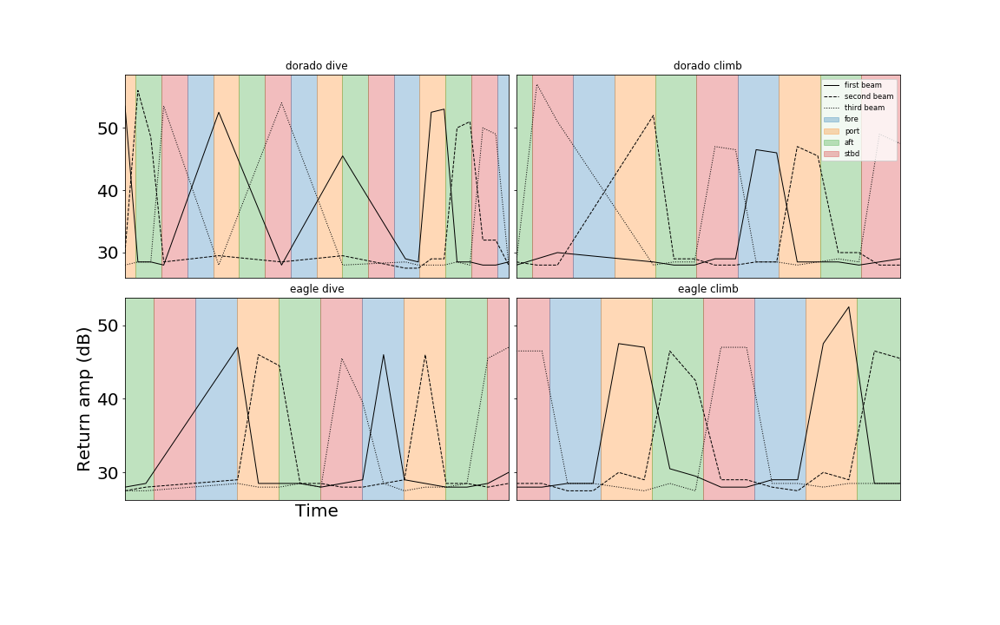

Last updated October 2020. For the most recent version, telemetry scripts, and links to supporting software and documentation visit:
https://github.com/callumrollo/adcp-glider-guide
This informal guide was compiled using information from the Nortek Signature manuals, in particular the Integrator’s Guide, correspondence with Nortek and Seaglider (now Hydroid, previously Kongsberg) support teams, published data from previous integrations on the Seaglider and Spray platforms, and personal experience working with the system 2018-2020. This guide comes with no warranty, guarantees of competence, or support. In following this guide you may irreparably damage your glider, sensor, computer, lab, person etc. The author assumes no responsibility. See licence file for full details. Please don’t sue me, I’m poor.
For qualified and competent tech support contact:
support@nortekgroup.com
seaglidersupport@hydroid.com
To connect to the AD2CP for bench testing you will require:
https://www.nortekgroup.com/software (software is Windows only as of October 2020)
A Windows computer with an ethernet port
AD2CP manuals “Signature Operations” and “AD2CP Integrator’s Guide”
https://www.nortekgroup.com/manuals-quick-guides
Powered ethernet to standard subsea 8 pin cable this is included in the glider case
The Nortek website is the authoritative source for all information regarding the AD2CP and should be checked for the latest software and manuals.
The Signature Deployment software expects sensors from the Nortek Signature range but has the capability to interact with the glider mounted AD2CP. Using this software it is possible to communicate with the AD2CP via a terminal emulator, download files from the AD2CP and start recording data. Data visualization/interpretation is not supported as of September 2020.
For ease of reading I have printed all commands in BOLD UPPERCASE the AD2CP itself is not case sensitive.
A schematic of the core states of the instrument and the commands to switch between them. Adapted from the Nortek AD2CP Integrator’s Guide.
| Mode number | Instrument Mode |
|---|---|
| 0000 | Bootloader/firmware upgrade |
| 0001 | Measurement |
| 0002 | Command |
| 0004 | Data retrieval |
| 0005 | Confirmation |
| 0006 | FTP-mode |
Numerical codes for the AD2CP states. This is the number returned after sending the INQ command. Adapted from the Nortek AD2CP Integrator’s Guide
SETDEFAULT,ALL
SETPLAN,FN=“todays_date_and_start_time_TANKTEST.AD2CP”
SETPLAN,MIAVG=30
SETAVG,AI=2
SETAVG,NC=15
SETAVG,CS=2.0
SETAVG,NPING=8
START
This will record a profile every 30 s. Each profile will average 8 pings over a two second period. The ADCP will record 15 cells of 2 m size.
Commands for parameters typically have three key options GET for the present setting GETLIM for the acceptable range of values and SET to assign a new value to a parameter. To confuse things, parameters are grouped into a number of categories which must be stated when interrogating that parameter. e.g. to interrogate the cell size CS parameter for the average profile use: GETAVG,CS to find its present value, GETAVGLIM,CS to find the accepted range of cell size values, and SETAVG,CS=x to set a new cell size of x meters. Values such as file name are controlled through the group PLAN rather than"AVG
General commands:
n.b. GETALL will return some errors as the custom glider AD2CP lacks some of the functionality of the Signature 1000 such as a vertical beam. Don’t panic, your sensor is fine.
The limits for the various arguments are returned as a list of valid values, and/or ranges, enclosed in parenthesis (). An empty list, (), is used for arguments that are unused/not yet implemented. Square brackets [] signify a range of valid values that includes the listed values. String arguments are encapsulated with “”, like for normal parameter handling. A semicolon ; is used as separator between limits and values. The argument format can also be inferred from the limits, integer values are shown without a decimal point, floating point values are shown with a decimal point and strings are either shown with the string specifier, “”, or as a range of characters using ‘’ for specifying a character.
Examples: - [1;128] – Integer value, valid from 1 to 128. - ([1300.00;1700.00];0.0) – Floating point value, valid values are 0.0 and the range from 1300.00 to 1700.00. - ([‘0’;‘9’];[‘a’;‘z’];[‘A’;‘Z’];‘.’) – String argument with valid characters being . and the character ranges a-z, A-Z, 0-9. - (“BEAM”) – String argument with BEAM being the only valid string. - (0;1) – Integer value with two valid values, 0 and 1.
The AD2CP occasionally requires a login, usually after being left powered on with no input. The details should be
Signature Username: nortek Password: (blank) or Signature Username: nortek Password: nortek
If neither of these work, temporarily interrupting the power supply and restarting Signature Deployment will get you back in. This does stop the AD2CP from recording data. The password can be reset when connected via ethernet.
When connected to power, a steady blue light on the AD2CP indicates that it is drawing power and not actively recording. When deployed, the light blinks when it sends out an acoustic ping, there is a quiet but audible click.
Tests shows the clock drifts at approx 1 sec/week. However the AD2CP clock syncs with the Seaglider clock at the start of every profile, so this should not be an issue.
The AD2CP has a 16GB memory card
The AD2CP does not have:
The ethernet comm port connetcs to a dedicated Linux processor. This can handle connections over telnet, raw connection and FTP. It should be possible to connect to the instrument this way, without using Nortek’s dedicated software if needed.
Using SETEALTERNATE you can run two completely independent AD2CP setups in tandem. The primary configuration runs for PLAN seconds, the unit then powers down for IDLE seconds. The secondary configuration runs for PLAN1 seconds followed by an idle period of IDLE1 seconds. The process the repeats. All data are recorded to the same file to the filename FN in SETPLAN and SETPLAN1 must be the same The valid range for the various arguments should be verified using the GETALTERNATELIM command. SETALTERNATE is potentially useful but quite confusing. One can run two completely different recording plans in alternating time segments. Caution is recommended if using this functionality, consult the Integrator’s Guide for more detail.
This requires three things:
Note: the NCP_GO file supplied by Elizabeth Creed in September 2018 is rejected by the glider with settmavg,cy=“ENU”. The coordinates must be set to “BEAM”. This only affects the coordinate system of velocity data in the telemetry snippet files.
To toggle the return of snippet files (approx 8Kb per dive), use the command $CP_XMITPROFILE in the cmdfile on the glider base staion. $CP_XMITPROFILE,1 to turn on snippet files or $CP_XMITPROFILE,0 to turn off.
If telemetry is enabled, the glider will send back snippet files over Iridium. Once all the parts are uploaded to the basestation, two files will be generated for each dive cpNNNNau.r for the dive and cpNNNNbu.r for the climb, where NNNN is the four digit dive number. These data are then combined in pcp637NNNNa.dat
The telemetry files are made up of repeating blocks of National Marine Electronics Association (NMEA) 0183 messages. The first row of each block specifies the instrument type (4=Signature), instrument serial number, number of beams in use, number of cells, blanking distance, cell size and coordinate system of snippet file data.
$PNORI1,4,100476,3,15,0.30,2.00,ENU*0F
These NMEA strings consist of three parts: 1. $PNORI1 is the “talker”. In this case P identifies a proprietary system NOR is the identifier for Nortek and I1 is the Nortek code for this message string. 2. 4,100476,3,15,0.30,2.00,ENU The comma separated values are the values of parameters specified by the manufacturer for this message type, identified by their position. Where data are not available, an empty space is left e.g.4,100476,,,0.30,,ENU such that position is not lost. In this case the values are number of transducers on instrument, instrument serial number, number of beams recording, number of cells, blanking distance (m), cell size (m) and coordinate reference frame. 3. *0Fis an optional checksum in hexadecimal, calculated by bitwise exclusive OR of the ASCII characters between the $ and *
For more information on NMEA, see the pdf guide from the pynmea2 library https://github.com/Knio/pynmea2/blob/master/NMEA0183.pdf this package performs a number of useful functions, including checksum calculation and NMEA string parsing.
The second row:
$PNORS1,112318,113108,0,2A4C0002,13.8,1497.3,0.00,226.4,18.0,0.00,-1.5,0.00,63.305,0.00,11.83*7F
Specifies more constants: date (mmddyy), time (hhmmss), error code, status code, battery voltage (V), sound speed (m/s), heading standard deviation (deg) heading (deg), pitch (deg), pitch standard deviation (deg), roll (deg), roll standard deviation (deg), pressure (dBar), pressure standard deviation (dBar), temperature (C).
After this there are multiple rows beginning $PNORC1, one for each sample taken.
$PNORC1,112318,113108,1,2.3,0.083,0.113,-0.039,64.0,63.3,63.4,86,82,75*5D
The columns of this data following the talker string are as follows: date (mmddyy), time (hhmmss), cell number, cell distance from transducer, velocity head 1, velocity head 2, velocity head 3, return amp head 1, return amp head 2, return amp head 3, correlation head 1, correlation head 2, correlation head 3. Distance in m, velocity in m/s, amplitude in dB, correlation in %.
The python script tele_checker.py reads these text files and plots the beam amplitude and correlation for each dive in groups of 10 ensembles. Each plot typically covers 40 - 60 minutes of data. These plots are saved as in png format with file names tele_amp_NNNN_X.png and tele_cor_NNNN_X.png where NNNN is the dive number and X the chunk number. Plots below show examples from a deployment in oligotrophic waters with good quality data.
Snippet files correlations: Good correlations are in blue, we expect good correlation out to 10 m at least. Range may be less in low scattering however. The first cell often has a lower correlation, possibly due to ringing.
Snippet files amplitudes: Amplitude drops off rapidly with distance, this is raw return amp not gain adjusted so this is expected. Check to make sure all three heads report similar return amps. Return amp is dependant on amount of suitable size scatterers in the water column. As a result, it will decrease in clear oligotrophic water.
The script also produces average plots using all the snippet file data in the folder.
Call tele_checker.py from the terminal using python telechecker.py -p ‘path-to-your-adcp-snippet-files’. Make sure that the Python libraries required by the script are in your shell path. Snippet files can be processed automatically by adding this command to a glider’s .logout file. The script checks for existing figures, so only new snippet files and average data are processed. If you wish to force reprocessing, remove the figures from the directory before calling the script.
The settings for snippet files can be changed in NCP_GO with SETTMAVG. The following arguments can be specified:
Average mode is best for shear velocity information. Low power consumption and good data quality can be achieved by averaging every 15 or 30 seconds using 4 or 8 ensembles. Burst mode is geared toward measurements of turbulence. This is more power hungry and will fill up the memory card faster. Burst mode allows more pings per second.
During deployment, the glider should be kept within an attitude envelope that orients the three operating transducers at similar angles from the vertical. If the glider pitches or rolls outside of the envelope, the beams will sample water parcels at different depths. The AD2CP does not actively resample by changing time gating of data recording as some other ADCPs do.
This vertical beam miss can be calculated using functions in the adcp-glider repo. Here is an example of the attitude effects on vertical beam miss at 15 m from the glider, assuming 2 m bin size.
I recommend using a large bin size or 2 m to ensure sufficient scatterers in each bin for reliable measurements. If a smaller bin is used, the glider attitude must be more tightly controlled.
I recommend recording in glider coordinates (BEAM). The conversions to XYZ and ENU rely on the AD2CP’s attitude sensors. If there is an error with these, it is difficult to recover the original AD2CP data. Conversely, the conversion from glider coordinates to XYZ or ENU is trivial. Functions in the linked repository perform this conversion.
Unless you erase the recorder immediatly before deployment (not recommended) data from self tests and sim dives will be retained in the data files. The simplest way to remove these is to apply a time filter after importing the data, removing all pre-deplyment ADCP data.
The free Nortek software SignatureViewer will display data and show you that the sensor is recording at the intervals you set. However, it does not process the three beams correctly as it expects four beam input. You can use SignatureViewer to export data files as ntk and then view them with another program.
Nortek MIDAS will read .adcp files and convert them to netCDF4, matlab or csv format. It will also convert to and replay ntk files.
Nortek’s proprietary OceanContour apparently can read the AD2CP data, but costs over £1000. The author has not tried it.
The repository https://github.com/callumrollo/adcp-glider/ contains Python scripts that as input the netcdf files created in step 3 and the output of the UEA Seaglider Toolbox.
A number of bench tests are recommended before deploying the ADCP glider. Particularly after making any changes to the AD2CP or glider firmware. The process for setting up the glider for bench tests is described in the first section of this manual. As part of bench testing, sim dives should be performed.
It is recommended to carry out bench tests in a tank prior to deploying the glider. Testing is a tank will test that the four transducers record a similar signal return in water. If the signal return of the transducers differs by more than a few decibels, this could be a sign of a damaged transducer. Due to the amount of acoustic ringing in a tank, the measurements of water velocity reported will not be reliable.
Rationale: At least one Seaglider firmware version (66.12 Dorado) had an error that supplied the opposite orientation parameter to the AD2CP during dive and climb phases. This caused the incorrect beam to be switched off, though the AD2CP sent out pings and recorded data as normal. To test that the AD2CP is behaving as expected, I recommend you physically test the transducers during a sim dive.
This can be accomplished by the simple expedient of a water filled nitrile glove and a timing source.
Be sure that your timing source matches the AD2CP. The simplest way to achieve this is to conduct a sim dive after the glider has synced its clock to GPS and use a similarly synced source. +/- a second is good enough.
 Example result of the above procedure when used to test a firmware fix. Under the old Dorado firmware (top row) the fore facing beam was switched off during the dive and the aft facing beam was switched off during ascent, the opposite behaviour to what was desired. The issue was fixed with the Eaglecp firmware (bottom row).
This guide is a work in progress. Please direct any questions/recommendations to Callum Rollo
firstnameinitial.lastname@uea.ac.uk
firstnameinitial.lastname@outlook.com
Or submit an issue/pull request on Github